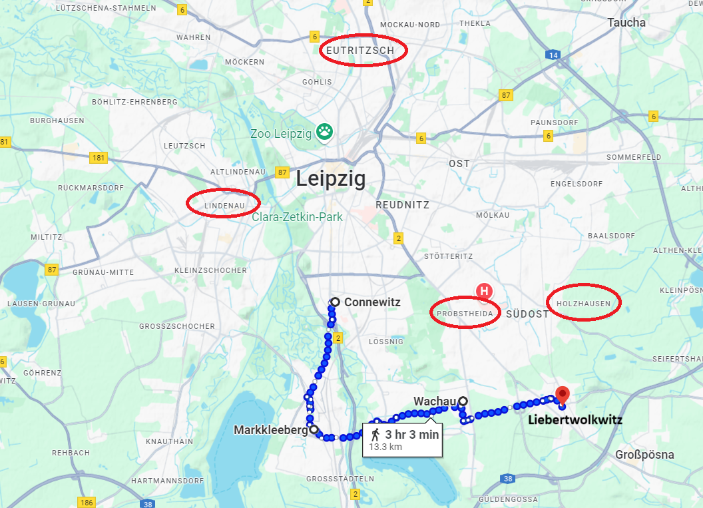
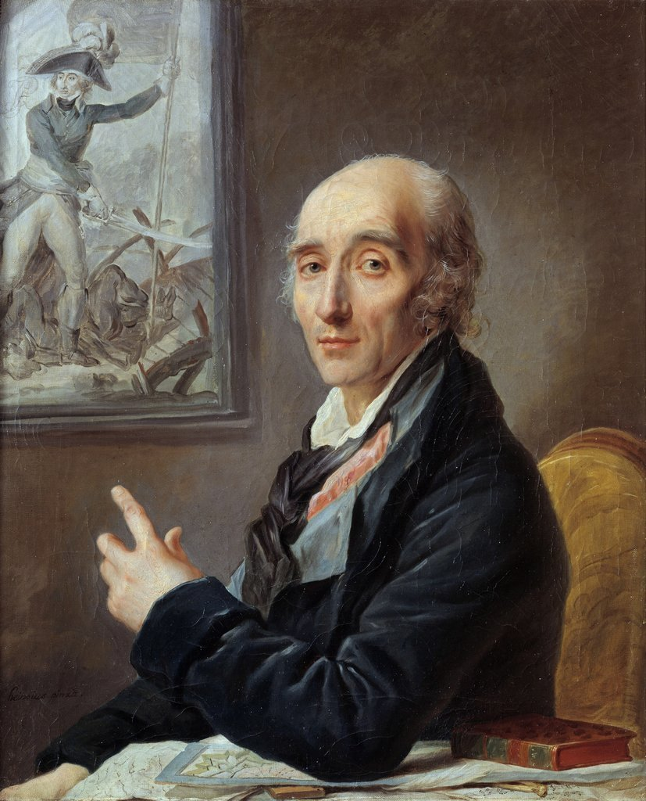
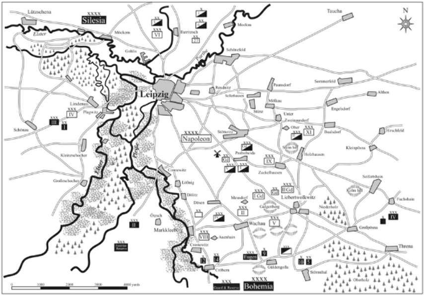

라이프치히 전투 (10) - 나폴레옹 매직은 계속된다
게시: 2025-07-28T06:30:10+09:00
나폴레옹은 결코 수비적 지휘관이 아니었으며, 자신의 전력이 적에 비해 우세이든 열세이든 언제나 공격을 통해 실마리를 풀어나가는 스타일이었습니다. 베르나도트는 연합군의 누구보다도 그 사실을 잘 알고 있었고, 따라서 나폴레옹은 반드시 슈바르첸베르크든 블뤼허든 연합군의 2개 방면군 중 하나를 먼저 격파하려들 것이라고 생각했습니다. 따라서 나폴레옹이 할러 방면으로 진격하려 한다는 보고서를 받아들자, 그렇게 겁을 집어먹고 행군을 멈추고 일단 상황을 보기로 했던 것입니다. 블뤼허의 의심처럼 베르나도트가 프랑스편인 것은 아니었지만, 확실히 베르나도트는 이번 전쟁을 통해 노르웨이라는 전리품을 챙기고 싶어했을 뿐 피를 흘리고 싶지는 않았습니다. 그러나 정작 나폴레옹은 할러와 메르세부르크 일대에서 멈칫거리고 있는 슐레지엔 방면군을 선제 공격할 생각은 전혀 없었습니다. 그의 관점에서, 연합군의 핵심은 어디까지나 보헤미아 방면군이었고, 슈바르첸베르크만 먼저 깨뜨리면 블뤼허와 베르나도트는 저절로 무너질 것이라고 판단했습니다. 슈바르첸베르크가 자신의 우익, 즉 마클리베르크(Markkleeberg)-리베르트볼크비츠(Liberwolkwitz) 일대에서 나폴레옹의 주력을 묶어둔 사이, 좌익을 플라이서강과 엘스터강 사이의 습지를 통해 코네비츠(Connewitz)로 찔러넣어 나폴레옹의 뒤통수를 친다는 망치와 모루 계획을 짰다는 것을 이미 말씀드린 바 있었습니다. 그런데, 나폴레옹도 거의 똑같은 생각을 하고 있었습니다. 10월 16일 전투를 위한 나폴레옹의 기본 작전은 다음과 같았습니다. 1) 포니아토프키의 제8군단은 플라이서강 우안, 즉 코네비츠-마클리베르크 일대에서 남쪽 방어선의 우익을 담당한다. 2) 남쪽 방어선의 중앙, 즉 바하우(Wachau)는 빅토르의 제2군단이 맡는다. 3) 방어선의 좌익인 리베르트볼크비츠는 로리스통의 제5군단이 담당한다. 4) 이렇게 3개 군단으로 구성된 남쪽 방어선에서 슈바르첸베르크의 주력을 묶어둔다. 5) 오쥬로의 제9군단, 막도날의 제11군단과 제1, 제2, 제5기병군단은 리베르트볼크비츠에서 북쪽으로 4~5km 떨어진 프롭스트하이다(Probstheida)와 홀츠하우젠(Holzhausen) 일대에서 대기하다가, 리베르트볼크비츠의 동쪽으로 우회기동하여 슈바르첸베르크의 우익 측면을 포위한다. 6) 그에 대응하기 위해 슈바르첸베르크가 중앙의 병력을 우익으로 분산시키면, 예비대로서 대기시켜둔 베르트랑의 제4군단, 마르몽의 제6군단, 수암의 제3군단과 제3기병군단을 중앙에 투입한다. 7) 슈바르첸베르크의 중앙이 무너지면 최종 예비대인 근위대를 투입하여 승리를 굳힌다.

(나폴레옹의 남쪽 방어선, 즉 코네비츠에서 리베르트볼크비츠까지를 이은 선입니다.)

(오랜만에 오쥬로의 이름이 등장했지요. 1796년~1797년의 제1차 이탈리아 침공에서 보여준 그의 활약상( https://nasica-old.tistory.com/6862465 참조)을 생각하면 나폴레옹이 황제가 된 이후 오쥬로의 활약이 더 없었던 점은 매우 이상합니다. 특히 그와 함께 나폴레옹의 원투펀치 노릇을 했던 마세나가 1809년 제5차 대불동맹전쟁에서도 맹활약을 했던 것을 생각하면 더욱 의아하지요. 그러나 가만 보면 그는 마세나만큼의 능력치는 원래부터 없었던 것 같습니다. 나폴레옹은 그에 대해 '용감하고 활동적이며 병사들의 사랑을 받는데다, 행운이 뒤따르는 사내'라고 말했는데, 마세나에 대해서는 '군사 방면에 있어 제국의 2인자'라고 평가한 것에 비하면 무척 박한 평입니다. 오쥬로는 바로 직전까지 병으로 인해 프랑스에서 요양 중이다가 신규 징집병으로 편성된 제9군단을 끌고 라이프치히에 막 도착한 상태였습니다. 나폴레옹이 라이프치히 전투 전에, '카스틸리오네의 오쥬로는 어디로 갔는가'라며 오쥬로의 투지 결여에 대해 야단을 치자, 오쥬로는 발끈하여 '이탈리아에서의 노병들을 돌려주면 내가 누구인지 보여드리겠다'라고 말대꾸를 했다고 합니다. 이탈리아에서의 노병들은 나폴레옹의 잦은 전쟁 속에서 이미 대부분 다 죽었지요. 이 초상화는 1805년~1812년 사이에 그려진 것으로 추정되는데, 독일 화가인 Johann Heinsius가 그린 것입니다. 이 초상화 속에서 오쥬로가 손으로 가리키는 그림은 1796년 아르콜레 다리의 전투에서 다리 위로 돌격을 이끄는 오쥬로를 그린 Charles Thévenin의 유명한 그림입니다.) 그러니까 나폴레옹의 계획도 기본적으로는 슈바르첸베르크와 비슷했지만, 적의 우익에 대한 우회 공격이 주공(主攻)이라기보다는 미끼이고, 진짜 주공은 역시 중앙이라는 점이 달랐습니다. 슈바르첸베르크보다 한 수 더 높은 차원의 작전이었습니다. 하지만 검객들끼리 칼싸움을 할 때 어떤 검술을 쓰느냐 하는 것보다 더 중요한 것이 있습니다. 누가 더 쾌검인가 하는 것이지요. 마찬가지로 두 군대가 맞붙을 때는 작전 자체보다 병력의 수가 더 중요했습니다. 나폴레옹은 그 점에 있어서도 단연 우월한 위치에 있었습니다. 당장 나폴레옹이 라이프치히에 집결시킨 병력은 16만이었고, 마클리베르크-리베르트볼크비츠 전선에 배치한 것만도 12만이었습니다. 그에 비해 그 앞에 늘어선 슈바르첸베르크의 병력은 기껏해야 10만도 되지 않았습니다. 나폴레옹이 전장의 신이라고 불린 이유는 적군의 전체 병력이 더 우세하더라도, 기동전을 펼치든 적을 속이든 지형지물에 따라 싸움터를 잘 택하든 어떻게 해서라도 당장 전투가 벌어지는 곳에서는 아군의 병력이 더 많도록 했기 때문이었습니다. 그리고 1813년 10월 16일, 싸움터인 라이프치히 남쪽 전선에서도, 어어하는 사이에 나폴레옹은 다시 한번 그런 기적을 일으킨 것입니다. 나폴레옹이 여기서 승리한다면 8월 말 쿨름 전투 이후 계속 되어온 어려운 상황을 한 방에 뒤집을 수 있었습니다. 물론 라이프치히의 남서부에서도 아마도 블뤼허의 슐레지엔 방면군으로 추정되는 연합군의 움직임이 보고되기는 했으나, 남쪽의 슈바르첸베르크를 신속하게 격파한다면 그쪽 방면의 적군에 대한 승산은 충분했습니다. 그렇게 분산된 적을 각개격파하는 것은 모든 지휘관이 꿈꾸는 바였지만, 적군이 바보가 아닌 이상 그렇게 하나 하나 얌전히 각개격파 되기를 기다리고 있을 리가 없었습니다. 나폴레옹이 남쪽을 몰아칠 때, 남서쪽의 적군은 나폴레옹의 좌익을 노릴 것이 틀림없었습니다. 나폴레옹에겐 그에 대한 대비책이 있었을까요? 있었습니다. 바로 플라이서강과 엘스터강이었습니다. 그는 이 두 강과 그 사이의 습지가 군대의 이동에는 큰 장애물이 된다는 것을 이미 파악하고 있었고, 따라서 남쪽의 적과 남서쪽의 적은 서로를 돕지 못할 것이라고 확신하고 있었습니다.

(10월 16일 당시의 상황도입니다. 해상도가 좋은 그림은 아닙니다만, 당시의 엘스터강과 플라이서강, 그리고 북쪽의 파르터강의 모습을 잘 보여줍니다.) 그러나 이미 아시다시피 나폴레옹의 작전 계획에는 매우 큰 결함이 있었습니다. 바로 전제가 틀렸다는 것이지요. 남서쪽 메르세부르크 방면에서 다가오는 적은 블뤼허가 아니라 귤라이의 오스트리아 제3군단이었습니다. 블뤼허의 슐레지엔 방면군 5만4천은 마르몽이 보고한 바대로, 이미 쉬코이디츠까지 바싹 다가와 있었습니다. 나폴레옹은 마르몽의 보고가 수많은 허위 정보 중 하나라고 보고 라이프치히 북쪽에 배치된 마르몽의 제6군단, 베르트랑의 제4군단, 수암의 제3군단 등 네 휘하의 군단들을 모두 결정적인 순간에 남쪽 전선에 투입시킬 예비병력으로 이동시키려 하고 있었습니다. 이 오류로 인해, 나폴레옹의 전체 작전 계획은 완전히 틀어질 것이 예약되어 있었습니다. Source : The Life of Napoleon Bonaparte, by William Milligan Sloane Napoleon and the Struggle for Germany, by Leggiere, Michael V With Napoleon's Guns by Colonel Jean-Nicolas-Auguste Noël https://www.britannica.com/event/Napoleonic-Wars/Dispositions-for-the-autumn-campaign https://www.historyofwar.org/articles/battles_leipzig_16_october.html https://warhistory.org/@msw/article/leipzig-battle-of-the-nations https://www.frenchempire.net/biographies/arrighi/ https://en.wikipedia.org/wiki/Charles-Pierre_Augereau